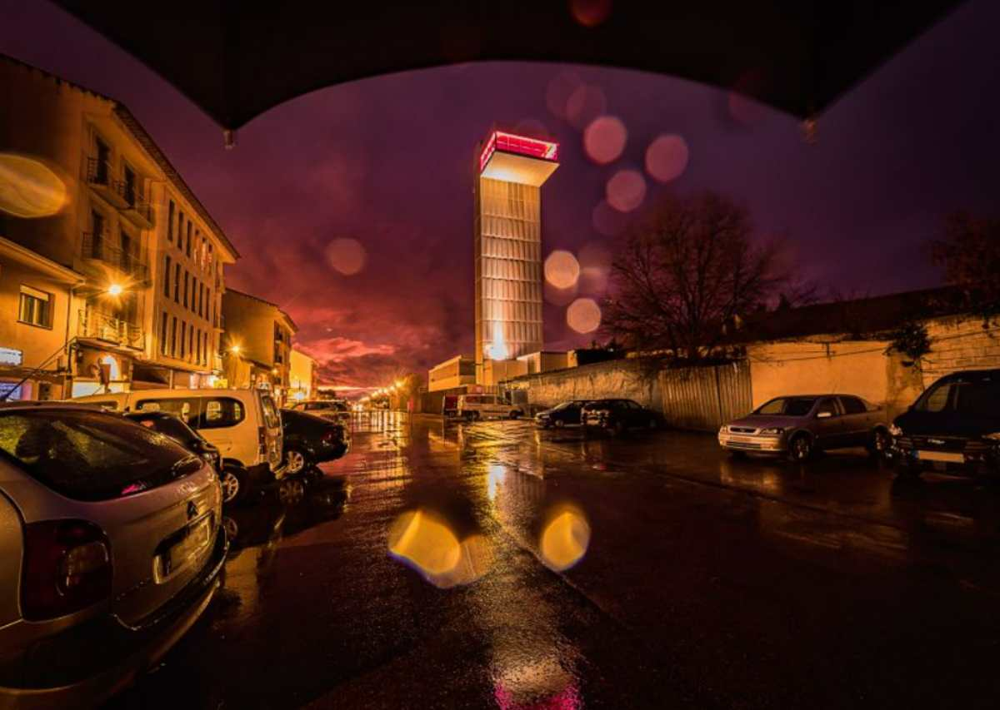

El edificio que albergaba la antigua estación de ferrocarril acoge actualmente el Museo Torre del Vino de Socuéllamos. Coronado con una Torre-Mirador, permite que el visitante pueda disfrutar de la llanura manchega. El MTDVS es un espacio sensible al diálogo, al descubrimiento, a la experimentación y a las vivencias; un estímulo para los visitantes en torno a una amplia gama temática, que comprende la historia del vino, el cultivo, la vinificación, la cata, el maridaje y el servicio del vino.
Es una casa-palacio cuya construcción data del año 1440. La importancia de este edificio que fue la Casa de la Encomienda que la Orden de Santiago y sus comendadores tenían en la villa, reside en los diferentes moradores que tuvo y en la impronta que éstos dejaron en la casa, ya que fueron añadiendo elementos en función de los gustos de cada época.
La Iglesia de Nuestra Señora de la Asunción, de estilo gótico tardío con elementos renacentistas, es el edificio más emblemático de Socuéllamos y donde que se venera al patrón de Socuéllamos, el Cristo de la Vega. Documentada ya en 1480, parece que existía un asentamiento anterior de finales del siglo XIII, del que se han encontrado unos túneles formados por arcos de medio punto.
Es un paraje natural situado a la salida de la población, en la carretera de Las Mesas, justo en el punto donde se cruza con el río Záncara. En él podemos disfrutar de un amplio espacio para el recreo, no en vano cuenta con instalaciones deportivas, sanitarias, zonas verdes, arboledas, zonas de acampada y barbacoas.